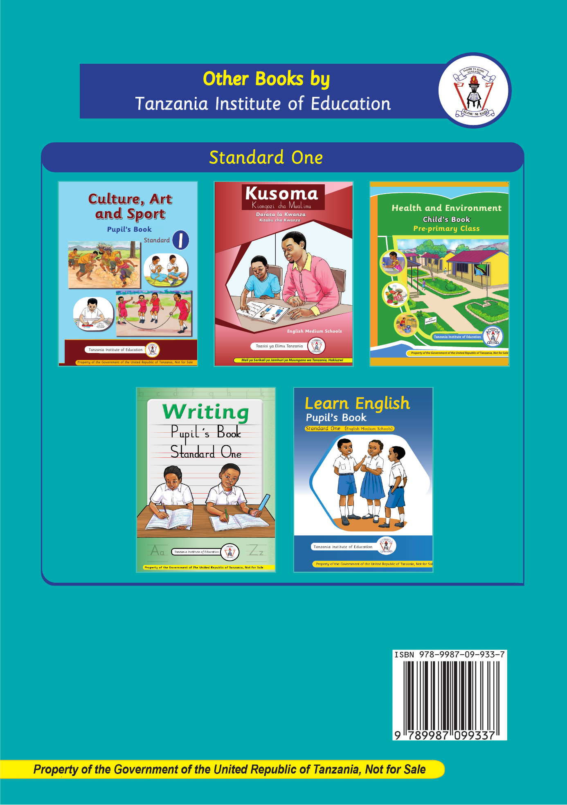

Other Books by Tanzania Institute of Education
Standard One
Culture, Art and Sport: Pupil’s Book, Standard One
Kusoma: Kiongozi cha Mwalimu, Darasa la Kwanza, Kitabu cha Kwanza
Health and Environment: Child’s Book, Pre-primary Class
Writing: Pupil’s Book, Standard One
Learn English: Pupil’s Book, Standard One, English Medium Schools
ISBN 978-9987-09-933-7
Property of the Government of the United Republic of Tanzania, Not for Sale